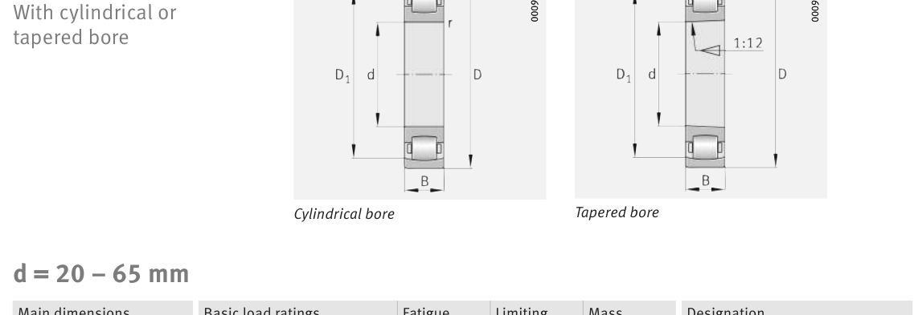

Original catalogue drawing - FAG Schaeffler HR 1, page 654

Scanned from the manufacturer catalogue page listing this part number. All part numbers printed on that table share the same drawing.
Scale cross-section
Blue = inner / outer ring, yellow = rolling element. Drawn to scale from this part's own
dimensions for selection reference only - not a manufacturing or assembly drawing.
Dimension table (mm / inch)
Symbol
Dimension
mm
inch
d
Bore diameter
40
1.5748
D
Outside diameter
80
3.1496
B
Inner-ring / bearing width
18
0.7087
r
Chamfer (min)
1.1
0.0433
Notes
Weights are given in kg. Load ratings are shown in both the original catalogue units and the converted value (1 N = 0.2248 lbf). Data is provided for selection reference only - confirm against the latest official catalogue before ordering.
Main dimensions
Bore d (mm)
40
Outside dia. D (mm)
80
Width B (mm)
18
Inner-ring shoulder dia. D1 (mm)
70.1
Load ratings & speeds
Basic dynamic load rating Cr (lbs)
11128
Basic static load rating Cor (lbs)
11915
Basic dynamic load rating Cr (N)
49500
Basic static load rating C0r (N)
53000
Fatigue limit load Cur (N)
5000
Limiting speed nG (rpm)
8,700
Weight
Weight (kg)
0.386
Mounting dimensions (fillets / shoulders)
Housing fillet r max (mm)
1.1
Shaft shoulder da (mm)
47
Housing shoulder Da (mm)
73
Housing fillet ra max (mm)
1
Bearing life (ISO 281 basic rating life)
C / P
Equivalent load P (N)
L10 (106 rev)
L10h at 2,900 rpm
4
12,375
102
584
6
8,250
392
2,256
8
6,188
1,024
5,885
10
4,950
2,154
12,382
15
3,300
8,323
47,836
Basic rating life per ISO 281: L10 = (C/P)10/3 with C = 49,500 N. Hours = L10 x 106 / (60n). Life-modification factors for lubrication, contamination and temperature (aISO) are not included.
Source & traceability
Brand
FAG
Source catalogue
FAG / Schaeffler Rolling Bearings HR 1
Catalogue page
p.654 (dimensions)
Load ratings in newtons, fatigue limit load Cur, limiting speed nG and reference speed nB.
Send us the quantity you need and we will come back with price and
lead time, normally within 24 hours. Equivalent parts from other brands can be quoted at the same time.